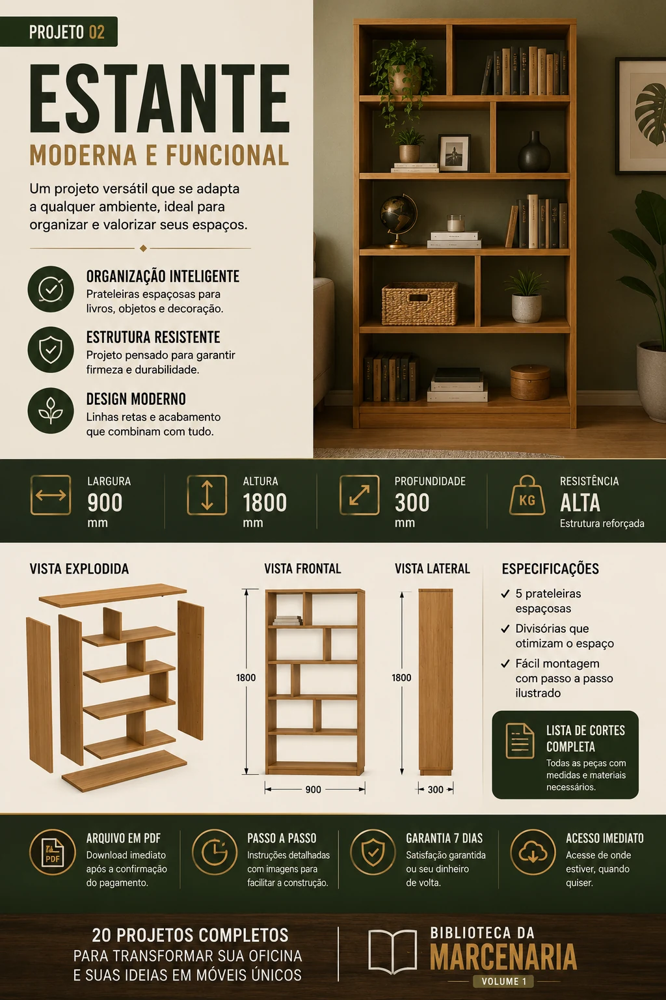
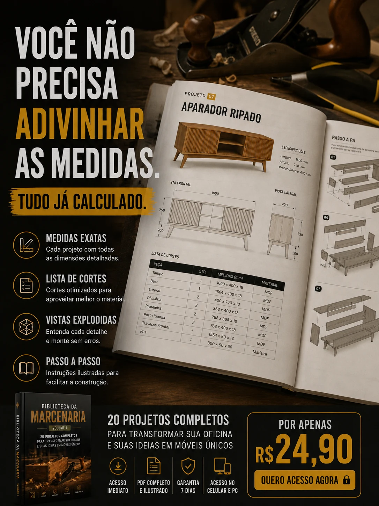

Ideias sem medidas
Uma foto inspira, mas raramente mostra o suficiente para planejar a construção.
Uma coleção prática de projetos para consultar, planejar e construir no seu ritmo, sem depender apenas de fotos incompletas ou vídeos acelerados.
Você encontra uma peça interessante, salva a imagem e imagina como ficaria na sua casa ou oficina. Mas, quando pensa em começar, surgem as dúvidas: medidas, proporções, peças, materiais e sequência de montagem.
Uma foto inspira, mas raramente mostra o suficiente para planejar a construção.
O processo passa em segundos e os detalhes importantes ficam pelo caminho.
Começar sem visualizar as etapas aumenta a chance de retrabalho e desperdício.
A Biblioteca reúne projetos de madeira em arquivos digitais para você consultar antes e durante a execução. Sem curso longo, sem mensalidade e sem promessas milagrosas.
Observe a estrutura da peça, suas partes e os principais detalhes antes de começar.
Use as informações do projeto para conferir dimensões e planejar adaptações.
Entenda melhor os componentes envolvidos e prepare a montagem com mais calma.
Acesse pelo celular, computador ou imprima as páginas que levará para a bancada.
Use imagens reais das peças e páginas internas. Esta seção precisa mostrar exatamente o que será entregue.

Uma amostra visual de como os projetos são apresentados: peça pronta, dimensões principais, vista explodida, vistas frontal e lateral e lista de especificações.
A Biblioteca é especialmente útil para quem está começando, já faz pequenos projetos por hobby ou tem ferramentas, mas nem sempre sabe o que construir em seguida.
A Biblioteca não substitui treinamento técnico, equipamentos adequados ou cuidados de segurança.
Comece por um projeto compatível com sua experiência e suas ferramentas.
Observe medidas, partes, materiais e possíveis adaptações antes do corte.
Separe peças e organize a sequência de trabalho com a folha de planejamento.
Avance no seu ritmo, consultando o projeto sempre que precisar.

Hoje pode ser um banco. Depois, uma estante. Mais adiante, uma peça adaptada ao seu espaço. A proposta é manter uma base de projetos disponível sempre que surgir vontade de construir algo novo.
Após a compra, você terá o prazo informado de 7 dias para verificar se o conteúdo corresponde à descrição desta página. Caso não seja adequado para você, poderá solicitar o cancelamento dentro desse período, conforme as condições do checkout.
Sim. A coleção inclui referências que podem ser utilizadas por pessoas que estão começando. Cada pessoa deve avaliar a complexidade, as ferramentas e seu nível de experiência antes de iniciar.
Não necessariamente. As ferramentas dependem do projeto escolhido. Confira o material antes de começar para entender o que será necessário.
Não. A Biblioteca é um produto digital. Madeira, ferramentas e peças físicas não estão incluídas nesta oferta.
Sim. Você poderá imprimir as páginas que desejar para consultar durante o planejamento ou a montagem.
Os projetos podem servir de referência para adaptações, mas qualquer mudança pode afetar proporções, encaixes, estabilidade e quantidade de material. Confira tudo antes do corte.
Você pode utilizar os projetos como referência para produzir peças físicas. Resultados comerciais dependem de custos, acabamento, preço, demanda e qualidade da execução. Não há promessa de ganhos.
As instruções de acesso são enviadas após a confirmação do pagamento, conforme os dados informados no checkout.
Escolha uma peça, organize os materiais e avance uma etapa de cada vez.
Conhecer a Biblioteca